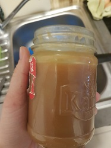
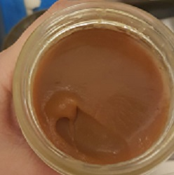

Salted Caramel Creme
Zubereitungszeit: 30min
Menge reicht für ein Marmeladenglas.
Hält bis zu 3 Wochen im Kühlschrank.

- 200g Zucker
- 60ml Wasser
- 90g weiche Butter
- 120ml Sahne
- 1/2TL Salz
- Zucker mit Wasser bei kleiner Hitze umrühren, bis der Zucker sich komplett aufgelöst hat (keine Kristalle mehr am Boden)
- 2 Minuten bei geschlossenem Deckel auf mitterer bis hoher Hitze köcheln lassen
- Deckel abnehmen, auf mittlere Hitze stellen und ohne rühren köcheln lassen, bis der Zucker sich goldbraun färbt (dauert ca 10-15 min, immer wieder schauen, der Wechsel erfolgt innerhalb von ca. 1 Minute)
- Die Butter unterrühren, bis sie vollkommen vermischt ist
- Die Sahne hinzugeben, wenn die Masse zu kalt geworden ist, oder sich auftrennt nochmal kurz erwärmen
- Salz untermischen und das Caramel in ein Glas geben und auskühlen lassen
